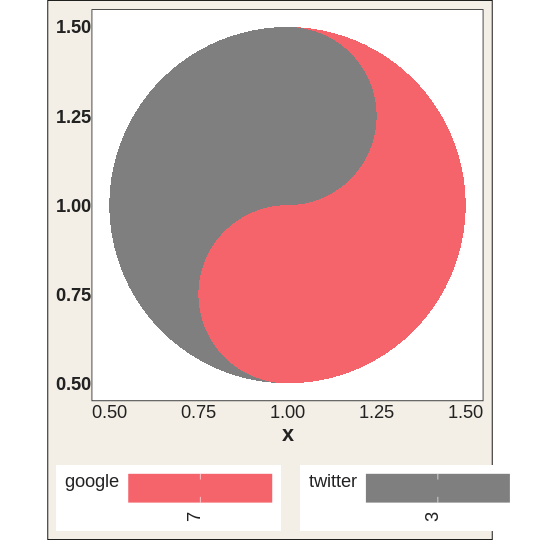
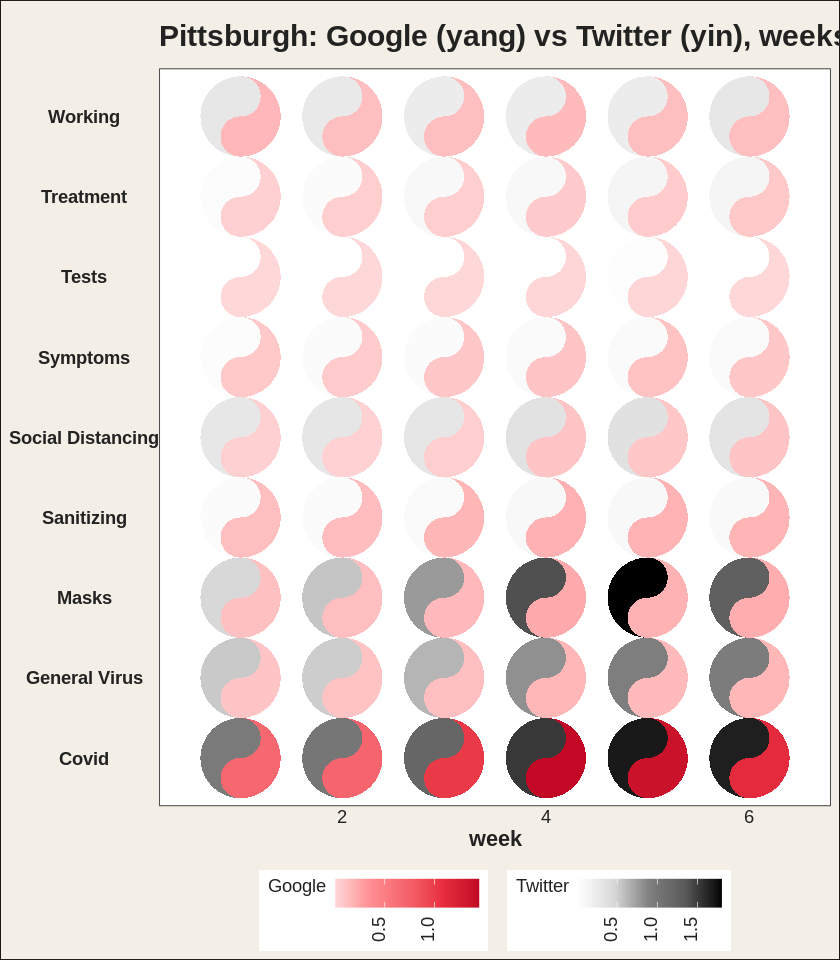
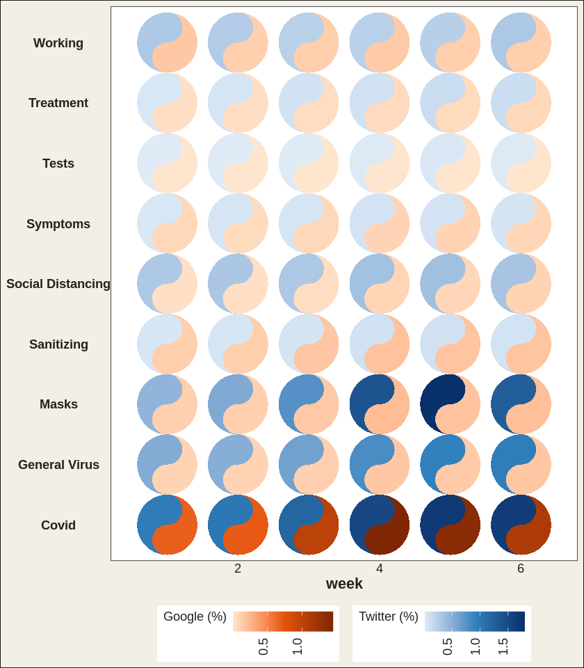
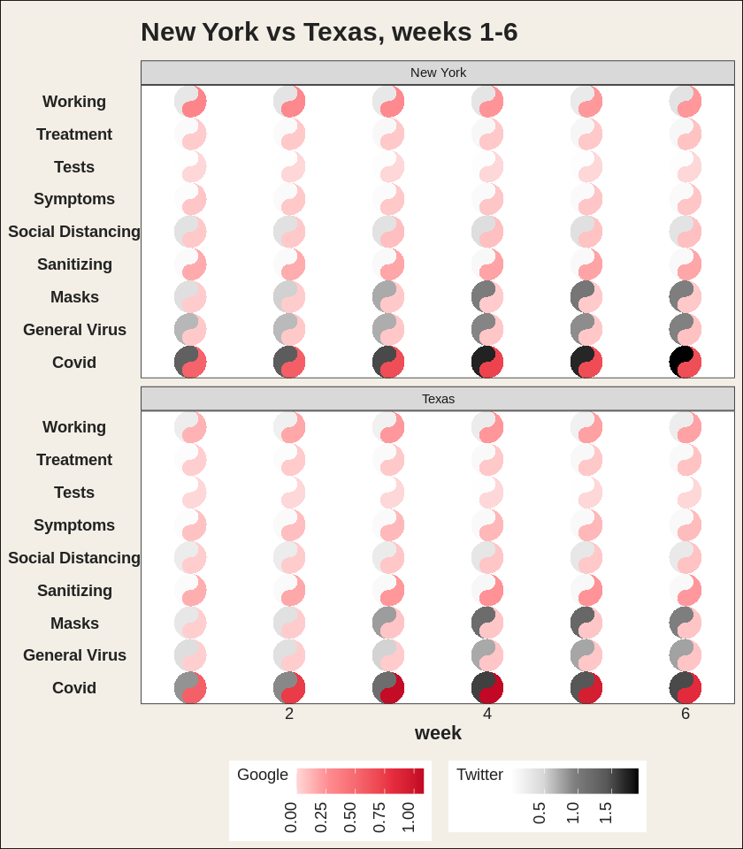
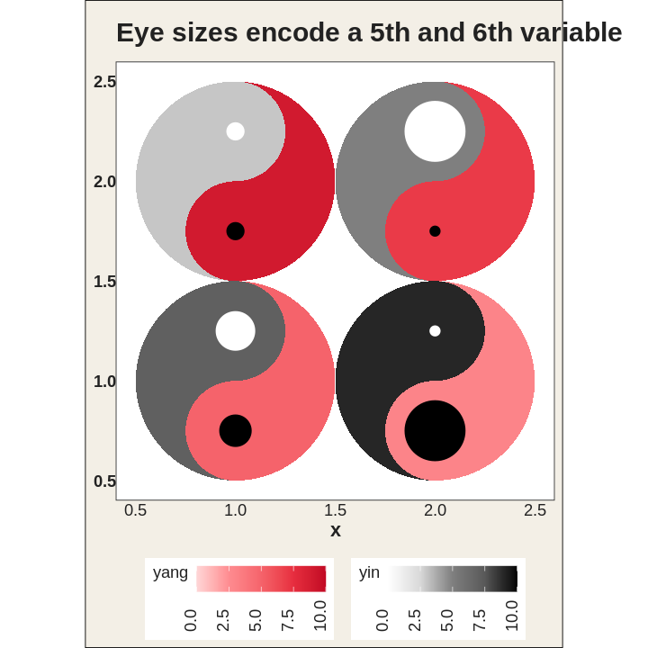
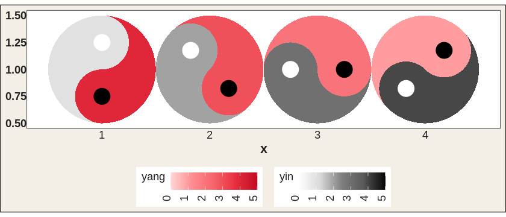
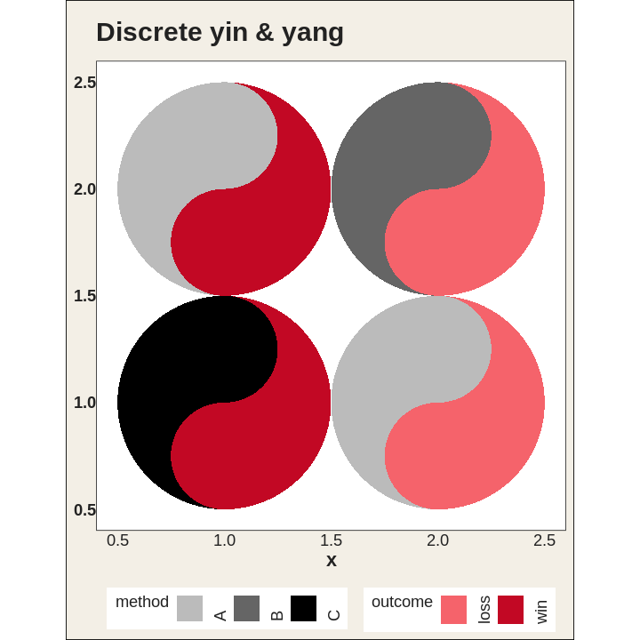

ggtaichi is a ggplot2 extension that compares data from two sources on a single grid of taichi (yin-yang) diagrams. A regular heat map made with geom_tile() encodes three dimensions (the x, y position and one value); geom_taichi() turns every cell into a taichi symbol whose two interlocking fish are filled by two sources at once, so four dimensions are expressed on one plot – and with the optional data-driven eyes of v0.2.0, up to six.
Installation
Install the released version from CRAN:
install.packages("ggtaichi")Or the development version from GitHub with:
# install.packages("devtools")
devtools::install_github("PursuitOfDataScience/ggtaichi")Anatomy of a taichi
Each symbol is a circle split by an S-curve into two interlocking fish. The yang (light) fish is shaded by one source and the yin (dark) fish by the other, each on its own gradient. By default there are no decorative dots – every drop of ink is data – and the classic eyes, when you enable them, are data channels too (see below).
library(ggtaichi)
library(ggplot2)
one <- data.frame(x = 1, y = 1, google = 7, twitter = 3)
ggplot(one, aes(x, y)) +
geom_taichi(yin = twitter, yang = google) +
coord_fixed() +
theme_taichi()
A clear, small grid
The built-in pitts_tg dataset holds the 30-week COVID-related Google and Twitter incidence rates for 9 categories in the Pittsburgh Metropolitan Statistical Area. With many weeks the symbols shrink, so it is often easier to read a slice. Here are the first six weeks, where each taichi is big enough to compare the two halves at a glance.
pitts_small <- subset(pitts_tg, week <= 6)
ggplot(pitts_small, aes(x = week, y = category)) +
geom_taichi(yin = Twitter, yang = Google) +
theme_taichi() +
ggtitle("Pittsburgh: Google (yang) vs Twitter (yin), weeks 1-6")
The legend titles default to the column names you supply. Note how Covid and Masks lean dark (high Twitter) while staying pink (moderate Google).
Your own palettes
Each fish gets its own gradient, and any extra argument is passed straight to ggplot2::scale_fill_gradientn().
ggplot(pitts_small, aes(x = week, y = category)) +
geom_taichi(
yin = Twitter, yin_name = "Twitter (%)",
yin_colors = c("#deebf7", "#3182bd", "#08306b"),
yang = Google, yang_name = "Google (%)",
yang_colors = c("#fee6ce", "#e6550d", "#7f2704")
) +
theme_taichi()
Comparing places
Because geom_taichi() is an ordinary layer, faceting just works. The states_tg dataset repeats the same measurements across four states; showing two of them over a handful of weeks keeps the glyphs large and legible.
two_states <- subset(states_tg, state %in% c("New York", "Texas") & week <= 6)
ggplot(two_states, aes(x = week, y = category)) +
geom_taichi(yin = Twitter, yang = Google) +
facet_wrap(~ state, ncol = 1) +
remove_padding(x = "c", y = "d") +
theme_taichi() +
ggtitle("New York vs Texas, weeks 1-6")
New in 0.2.0: eyes that carry data
eyes = TRUE draws the classic taichi dots, each centred in its own fish’s head. The eye arguments accept a constant or a data column: mapped eye sizes (rescaled to sensible radii) and colours make the glyph a genuine six-dimensional mark – x, y, two fills, two eyes.
quad <- data.frame(
x = c(1, 2, 1, 2),
y = c(2, 2, 1, 1),
yin = c(3, 5, 7, 9),
yang = c(9, 7, 5, 3),
reach = c(10, 40, 25, 5),
quality = c(2, 1, 4, 8)
)
ggplot(quad, aes(x, y)) +
geom_taichi(yin = yin, yang = yang,
eyes = TRUE,
yin_eye_size = reach,
yang_eye_size = quality,
limits = c(0, 10)) + # shared limits keep the palest fish visible
coord_fixed() +
theme_taichi() +
ggtitle("Eye sizes encode a 5th and 6th variable")
New in 0.2.0: rotation
angle rotates each glyph by a constant or by a column, so orientation can encode a directional or temporal variable – and, combined with gganimate, produces the iconic spinning taichi (see vignette("animations")).
rot <- data.frame(x = 1:4, y = 1, yin = 1:4, yang = 4:1,
turn = c(0, 45, 90, 135))
ggplot(rot, aes(x, y)) +
geom_taichi(yin = yin, yang = yang, angle = turn, eyes = TRUE,
limits = c(0, 5)) +
coord_fixed() +
theme_taichi()
New in 0.2.0: categorical fills
Factor, character, and logical columns now get a discrete fill scale automatically (v0.1.0 could only draw continuous values); computed expressions like factor(week) work too, and yin_scale / yang_scale accept any custom fill scale.
disc <- data.frame(
x = c(1, 2, 1, 2),
y = c(2, 2, 1, 1),
method = factor(c("A", "B", "C", "A")),
outcome = factor(c("win", "loss", "win", "loss"))
)
ggplot(disc, aes(x, y)) +
geom_taichi(yin = method, yang = outcome) +
coord_fixed() +
theme_taichi() +
ggtitle("Discrete yin & yang")
v0.2.0 also fixes the parameter routing of geom_taichi(): alpha, colour, linewidth, linetype, width, height, na.rm, and show.legend are all real arguments now, the deprecated size maps to linewidth with a warning, missing or misspelled yin / yang columns error immediately with a clear message, and the geometry is guarded by a testthat + vdiffr suite.
Animation
The taichi is a cyclical symbol, so motion suits it: geom_taichi() composes cleanly with gganimate – turn a third variable into animation frames instead of an axis, or spin the glyphs via angle. Full recipes live in vignette("animations").
See vignette("ggtaichi") for the full tour.
Acknowledgement
ggtaichi is built on top of, and is the spiritual sibling of, the ggDoubleHeat package, which introduced the idea of folding two data sources into a single reformed heat map through the geom_heat_*() family. ggtaichi reuses that two-scale design (and its example data) and re-imagines the per-cell glyph as a taichi diagram. ggDoubleHeat is the foundational layer of this package and should be cited when you use ggtaichi:
Yu Y, Buskirk T (2025). ggDoubleHeat: A Heatmap-Like Visualization Tool. R package version 0.1.3. CRAN: https://CRAN.R-project.org/package=ggDoubleHeat, GitHub: https://github.com/PursuitOfDataScience/ggDoubleHeat